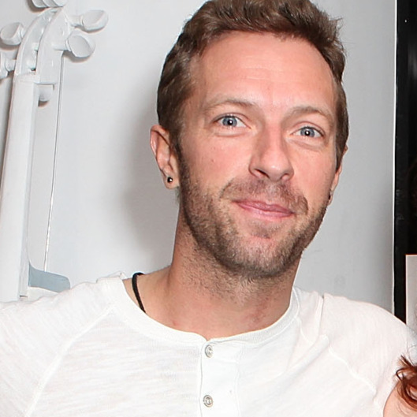
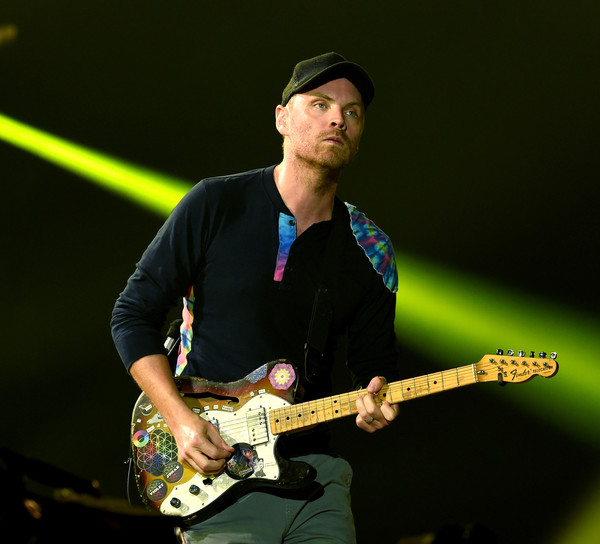

Chris Martin
"You dont know how lovely you are" -- "The Scientist" from A Rush of Blood to the Head
Known as the lead singer of Coldplay, Chris Martin is band's most well-known member. He's the face of the band and yet the most humble also often insecure, Martin has a habbit of saying "Sorry and Thank you" to anyone associated with Coldplay and within shouting distance. "Thanks alot and for you have done and for you are doing for us". He claims that there are only 3 things that stay constant in his busy life: 1. His turbulet relationship with women that drags his songwriting, 2. The fear of dying young , 3. And a paranoid obsession of hear lost.
Chris Martin was born on March 2, 1977, in Exeter, Devon, England. He attended University College London. He was married to Gwyneth Paltrow, but divorced in 2016. Chris and Gwyneth both have 2 children together. Apple and Moses Martin.
Jonny Bukland
"I don't care if you tear me apart, i don't care if you do, 'Cause in a sky full of stars, I think I saw you" -- "A Sky Full of Stars" from Ghost Stories
Jonny Bukland, the lead guitarist for coldplay. His ability to stay light when other rock stars who get weight down by pressure and stress on daily life is an essential aspect for the band to survive. As the lead guitarist, he is praised for his spell-binding riffs. Chris says: "Jonny just gives my songs life, they become the band song once he grabs hold of it. I love Jonny putting those unforgettable guitar lines over them".
Jonny Bukland was born in islington,London, on September 11, 1977. he moved to pantywyn, North Wales at the age of four and began learning guitar at the age of 11. His older brother encouraged him to learn the instrument, but he was also inspired by bands such as The Stone Roses and My Bloody Valentine. He attented at University College London where he took astronomy and mathematics. it was there he met his future band mates.
"Oh, I think I've landed in a world I hadn't seen" -- "A Head Full of Dreams" from A Head Full of Dreams
Guy Berryman, the bass player for Coldplay. he has called himself sex, drugs and Rock'n Roll member of the band, just like Chris, he has two sets of personality. When drinking and partying, he is easily the most friendly person in the group, but otherwise he is quite and reclusive. he si the only one out of the 4 members to never finish college. He says: "At school your pushed into this kind of system to become a professional of some sort, its BS, Its a system that you dont have to be a part of".
Guy Berryman was born in Kirkcaldy, Scotland on April 12 1978, but moved to Kent, England at the age of twelve. His father is an engineer who worked on the Channel Tunnel, located in the English Channel. He began playing bass guitar when he was sixteen, inspired by tunk and groove music. HE attended The Edinburgh Academy in Scotland before he went to the University College London. Following in his fathers's footsteps, he pursured an engineering degree but found it too difficult. he switched to arcgitectural study; he dropped out after Coldplay was started. While the other band members continued their education, he worked at a pub in London. In 2004, Guy married Joanna Briston , and they had one daughter together named Nico. Unfortunately, the couple split in 2007.
Will Champion
"Lights will guide you home, And ignite your bones, and I will try to fix you" -- "Fix you" from X&Y
Will Champion, is the drummer for Coldplay, Will is the most concerned member with the band's intrgrity and credibility. When questioned by his contribution with the band, he replied: "I like saying no, often i have to say no, no were not doing that." Hes also the standard for the band what he likes will get recorded and whatever the band does have to pass his test. With Will's will leading the way for Colplay.
Will Champion was born July 31 1978 in Southamption, England. He grew up playing guitar and other instruments, but he didnt learn the drums until he joined Coldplay later on. His father was professor of archeology at the University of Southampton. As a kid he attended the Cantell Scondary School and The Royal Hospital School before he went to University College of London. At the university he studied anthropology, and he also met the other band members from Coldplay. In 2003 he married Marianne Dark whom he had three children .